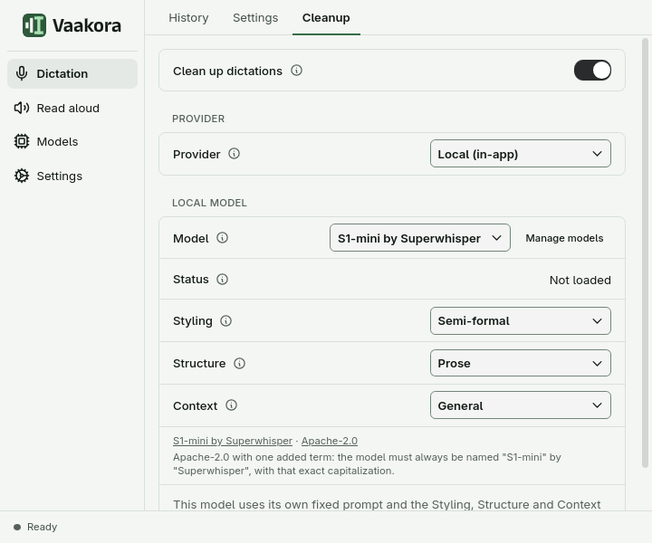
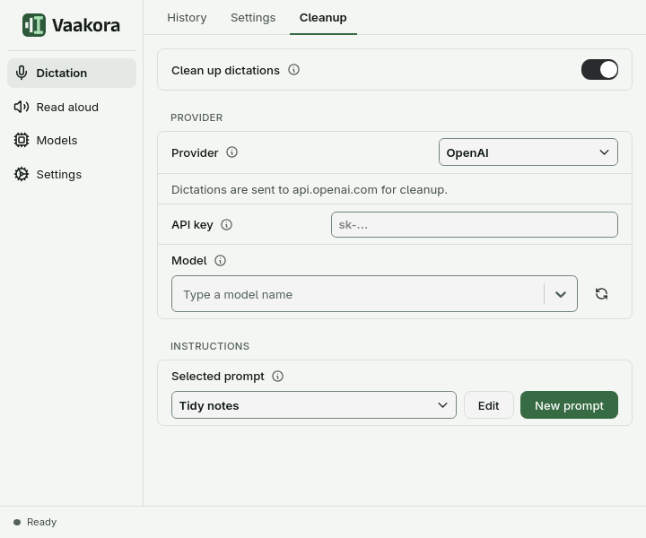

Cleanup
A post-processing provider tidies a transcript after you dictate. The "Local (in-app)" provider uses a small language model that runs on the CPU. A cloud provider is the other choice.
Local

-
Runs through a bundled
llama-server. Nothing has to be installed or started separately. - Transcripts never leave the machine.
- Five downloadable models are offered, each pinned to a fixed revision, size and SHA-256.
- S1-mini is driven by Styling, Structure and Context drop-downs. It uses its own fixed prompt.
- History keeps which model produced each cleaned-up entry and compares it with the raw text.
- A Raw Shortcut sits next to the Post-processing Shortcut.
Cloud

- A cloud provider needs your own API key. The page says where dictations are sent for cleanup.
- With a cloud provider, the model name and the prompt are yours to choose.